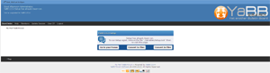

Upgrading from YaBB 2.x
If you are upgrading your existing YaBB 2 installation, there are a few simple steps that need to be taken in order to correctly complete the process. Before you begin, however, make sure you have a full backup of your working YaBB. It is also advisable to inform your users that you will be upgrading before you begin.
Make note of which mods that may have been added by checking Admin Center -> Installed Mods. 2.6 comes with HoneyPot, Anti-spam Question, SpamFruits, nospammeremail, self-delete-lock, X Posts Before Website Link, Event Calendar, IP-Lookup, Board password, External board link, Add Moderator, Minimum Registration Time, Set Search, Topic Preview, Ajax Live Preview, Guest Viewing Limit, Board Rules, CSS Buttons, Social Bookmarks, and Reason for Editing, as part of the core. If you have any of these installed on your old forum, they do not need to be reinstalled. All other mods will need to be reinstalled once you have finished upgrading your board. Note that 2.4/2.5AE/2.5.2 mods are not compatible with 2.6. Editing will need to be done.
As soon as you are ready, place your existing forum into maintenance mode. Go to the Admin Center, scroll down the left side Menu, click on "Maintenance Settings", check "Maintenance Mode?" and save the change.
Upgrading
- You will need to install a completely new version of YaBB 2.6 forum first!
- Go to the Installation section of this Quick Guide and follow all steps up through "Step 4 - Setting Up", including point 5 (which has you run the Setup program on the new forum). Then return here to the next step below.
- Your NEW forum is already in Maintenance Mode now, leave it that way while you complete the following steps.
- Be sure your OLD forum is in Maintenance Mode too.
Versions 2.2 and later are described above, versions 2.1 and earlier, the Maintenance Mode setting is at the top of the Forum Configuration/Forum Settings page. - If your old forum had 'Board password', 'Board Rules', or any other mod that directly altered the function of the Boards of your Forum you must install BoardConvert.pl into the yabb2 directory of your OLD forum, CHMod it to 755 and run it. It will create the conversion data necessary to properly import your Board settings into 2.6. Since the conversion data file is created in in the Variables folder of your OLD forum, it will be one of the files you will copy into the Convert/Variables folder in the next step.
- Using your FTP program or File Manager, copy the following files from your OLD forum into the same folders in your NEW forum:
- cgi-bin/yabb2/Convert/Boards/* (all files)
- cgi-bin/yabb2/Convert/Members/* (all files)
- cgi-bin/yabb2/Convert/Messages/* (all files)
- cgi-bin/yabb2/Convert/Variables/* (all files)
- public_html/yabbfiles/Attachments/* (all files)
- public_html/yabbfiles/avatars/UserAvatars/* (all files)
- Note:
This is a new method of converting 2.x forums. 2.6 has many differences from previous versions and many files have been renamed and moved. 2.6 uses CSS styled buttons exclusively.
If your forum is very large it may take a long time to copy all the files from the five folders above. In this case it may be easier to just move the old folders from your old forum to the convert folders in your new forum. - Make sure you have a backup of your old forum files and folders. - If you have any special template files, you may wish to upload those files also, but they will need modification before they will work properly with YaBB 2.6.
YaBB 2.6 has many additional template files.. It's suggested you upload your old custom templates to a separate directory. (You will need to rename default.index and default.css to match the name of your new template directory.) Then you will be able to add your old template through Manage Templates as you update your old templates to the new format or edit the new templates to match your old template styles.
The honeypot anti-spam feature requires
.green, .none {
display:none;
}
be added to the template/css file. If you have a preexisting class with either of those names, it will need to be renamed. Do not add this class to the Admin/default.css.
2.4 Templates. As with the 2.5AE stylesheet, the 'green' and 'none' classes must be added to any forum stylesheets. - If you have any special template files, you may wish to upload those files also, but they will need some modification before they will work properly with YaBB 2.6.
Note:
If you plan on keeping your old YaBB 2.x Templates and CSS settings, do not copy over the new template files with older templates of the same file name or you will not get what you expect. These files have changed, so you will either have to modify the new template/css files that come with YaBB 2.6, or follow the procedures in the link below to update your existing template files before overwriting the YaBB 2.6 template/css files.
We recommend you create a new folder in your new forum: cgi-bin/yabb2/Templates/new_folder_name/ and put your old template files (html) in it. Now rename the .html file to new_folder_name.html. Rename also your old CSS file to new_folder_name.css and put it in the public_html/yabbfiles/Templates/Forum/ directory. Repeat this for each of your existing custom templates in your old forum. Note that the CSS files may contain links to graphics that are now in a renamed folder. Change those links to point to the new_folder_name.
Template and CSS Comparisons from earlier versions of YaBB. One more edit: in your old css files you will need to add one additional class tag for the anti-spam Honeypot. Add:
".green {
display:none;
}"
to every template/css file. If you have a preexisting class with that name, it will need to be renamed.
- Once the uploading is complete, go to your Admin Center and run one of the Conversion Utilities. Convert is for 1x YaBB versions. Convert2x is for 2x YaBB versions (including 2.5.2). YaBB will handle checking the permissions on the files and folders, convert old files to the new configuration and import your old settings into your new installation.
- Log Out and Log back into your new forum as Administrator with the Admin user ID and password you used in your old forum and check the settings. YaBB should have imported your Forum date and other custom settings for you. (Note: for security reasons in 2.6, using your Screen name as your log in name is turned off by default - only your user ID or e-mail is initially usable.)
- Go to "Admin Center" => "Maintenance Controls" and run the "Rebuild Notifications Files" first!
Now run the other Maintenance Controls starting with "Rebuild Message Index" going through "Rebuild Members History." - Go through ALL tabs in the "Forum Settings" and "Advanced Settings" sections and verify all your settings. There are a number of new settings in version 2.6, so take your time here. Click the Save button at the bottom of each page even if you do not change any settings on the page.
- Go to "Maintenance Settings" and turn "Maintenance Mode?" off. Return to your forum. Refresh the page or clear the browser cache and start enjoying your brand new YaBB 2.6 Forum!
Note:
If you did allow users to get Email notification on new "Notifications" or new "PM" before you updated, you will have to set these settings again as new in your "Profile" => "Options" and "PM Preferences". If no other users logged in before you ran the "Rebuild Notifications Files" maintenance function, you (the Admin) will be the only one who has to reset these as new settings. - Once you are satisfied that your old forum has been imported properly, you should delete the Converter backup files using the Admin Center 'Delete backup files' utility - this will also remove the setup and converter utility files.
- As a final note: many of the default graphics files have been redone and renamed. Among the renamed files are the Group Membership stars. If you wish to use your old stars, they will need to be imported, otherwise you will need to assign new stars to your Member Groups from the Member Group section of the Admin Center.